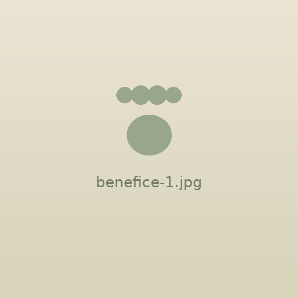
Explorez ensemble
Offrez à votre chat l'occasion de découvrir l'extérieur.
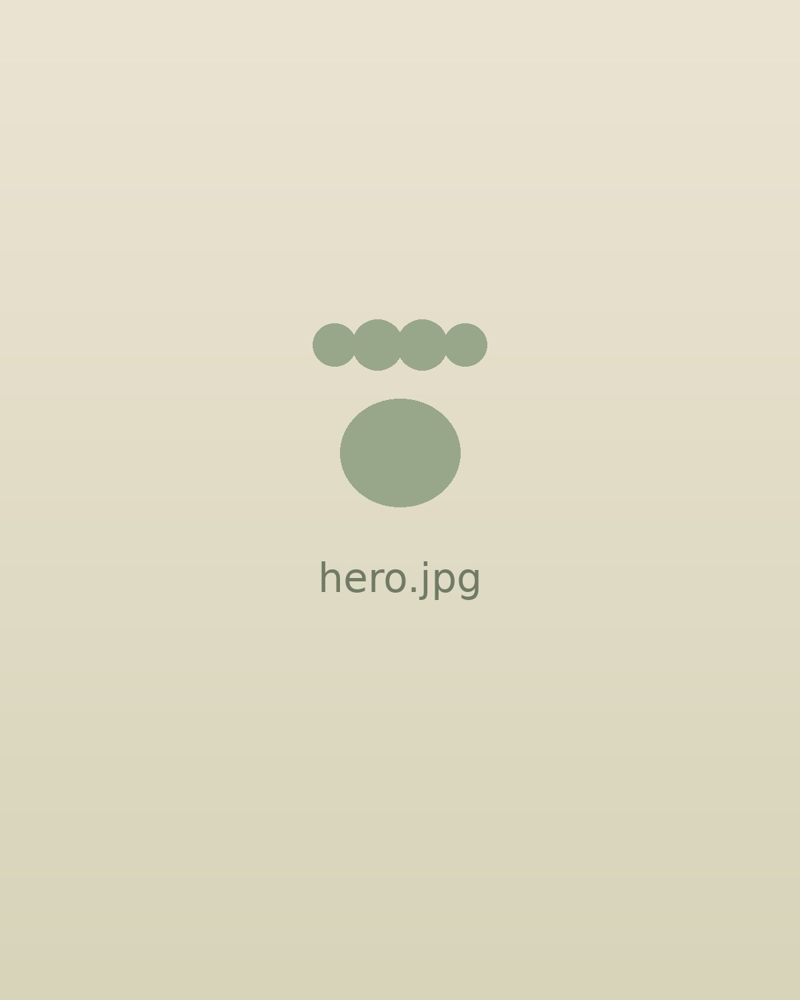
Le harnais pensé pour permettre à votre chat d'explorer le monde à vos côtés.
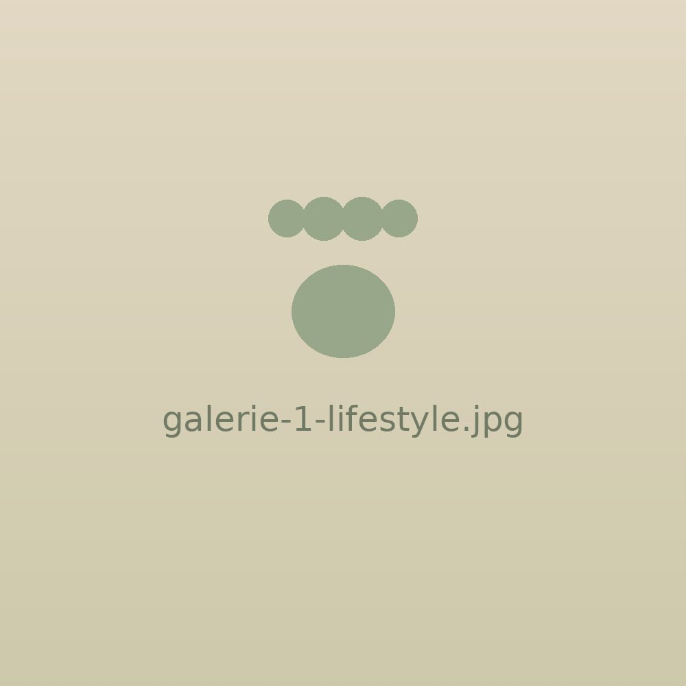
1/6Plus de liberté pour votre chat. Plus de sérénité pour vous.
FELYZO offre un maintien stable autour du poitrail tout en laissant votre chat libre de ses mouvements. Idéal pour les promenades, les sorties dans le jardin et les petites aventures du quotidien.
Couleur : Noir
Taille : M
Ajouté au panier :
Reste bien en place pendant les mouvements.
Une conception pensée pour respecter les mouvements naturels.
Explorez le monde ensemble.
Gardez votre chat près de vous.
Le problème
Mais votre chat n'est pas un petit chien. Lorsqu'il a peur ou qu'il veut faire demi-tour, il peut reculer rapidement et tenter de se dégager d'un harnais mal adapté. Son corps souple lui permet parfois de sortir d'un harnais classique en quelques secondes.
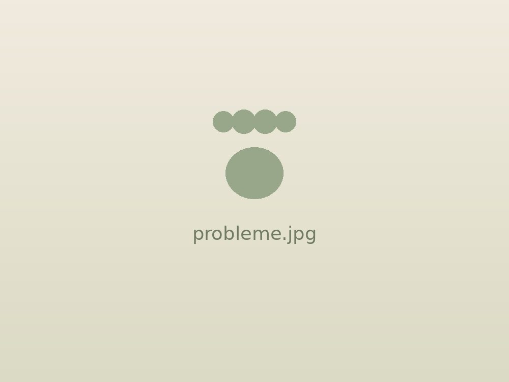
C'est précisément pour cette raison que FELYZO a été pensé.
La solution
FELYZO enveloppe le poitrail de votre chat pour offrir un maintien plus stable pendant ses déplacements. Votre chat peut marcher, explorer et découvrir son environnement tout en restant attaché à vous.
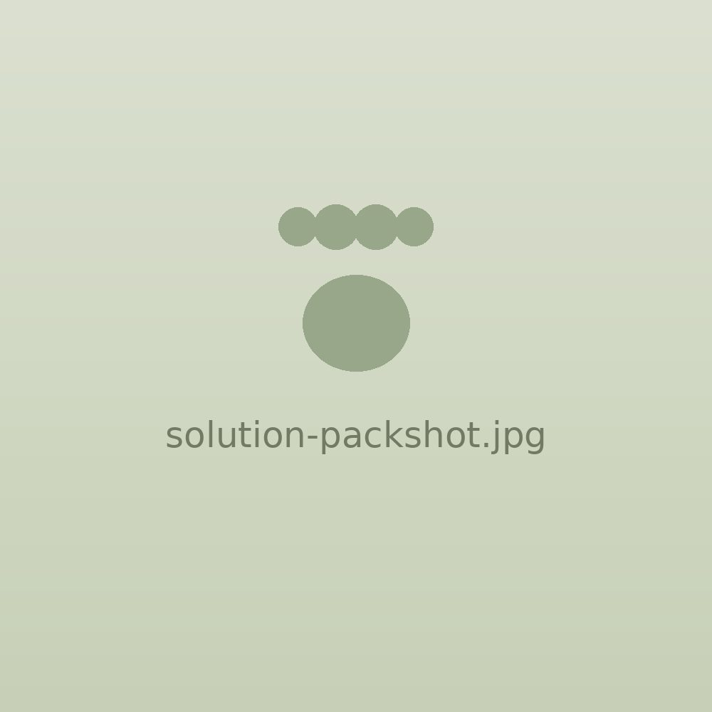
01 02 03Limite les mouvements permettant au chat de se dégager.
Pour un meilleur confort.
Solide et simple à utiliser.
FELYZO en action
Découvrez comment installer le harnais et voyez votre chat profiter de ses sorties en toute sérénité.
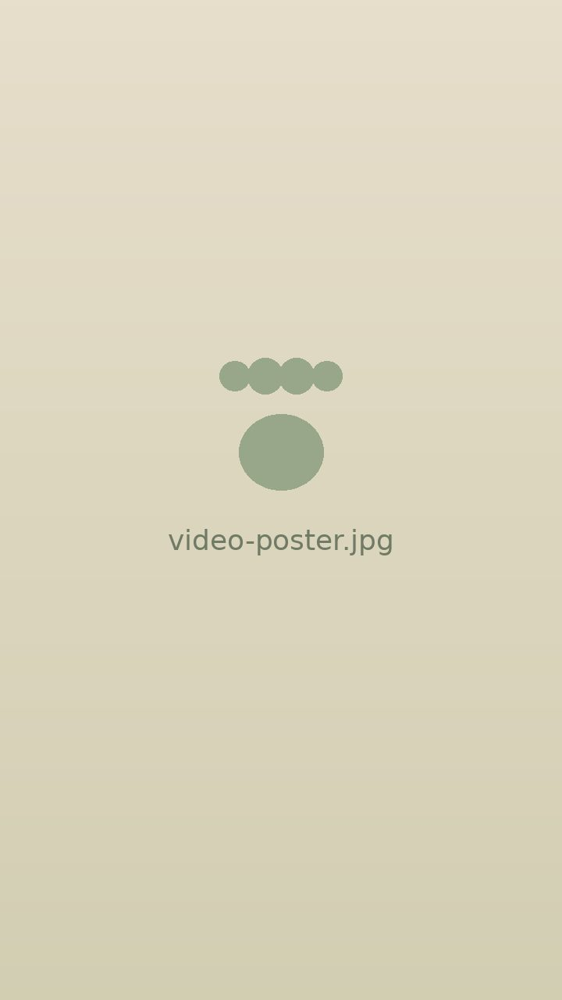
Les bénéfices

Offrez à votre chat l'occasion de découvrir l'extérieur.
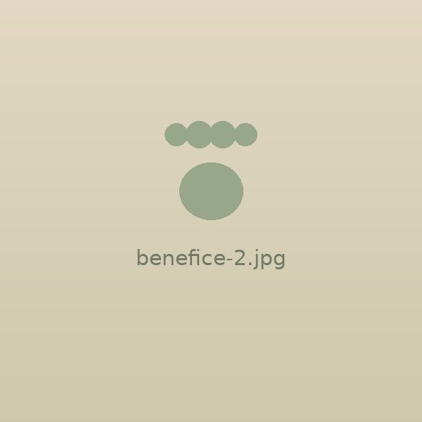
Gardez le contrôle sans constamment craindre qu'il s'échappe.
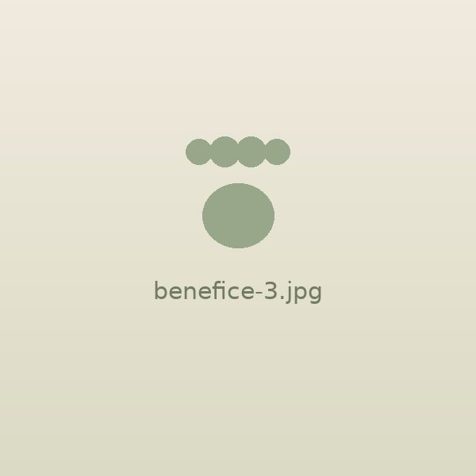
Une conception pensée pour accompagner ses mouvements.
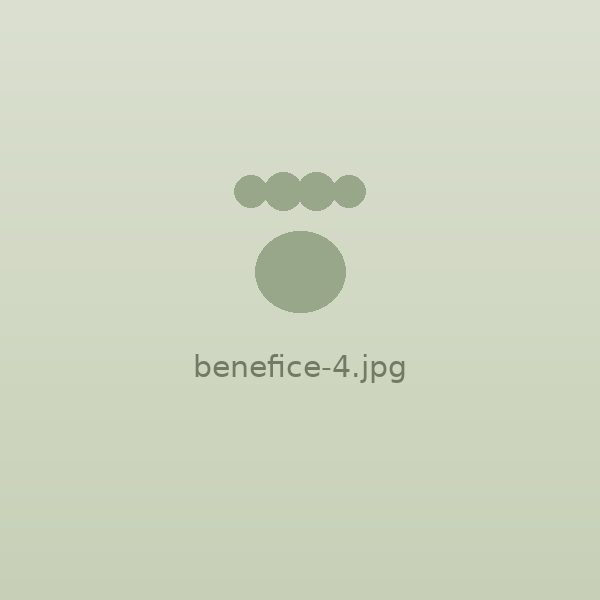
Jardin, parc, voyage ou promenade : FELYZO vous accompagne partout.
Avant / après
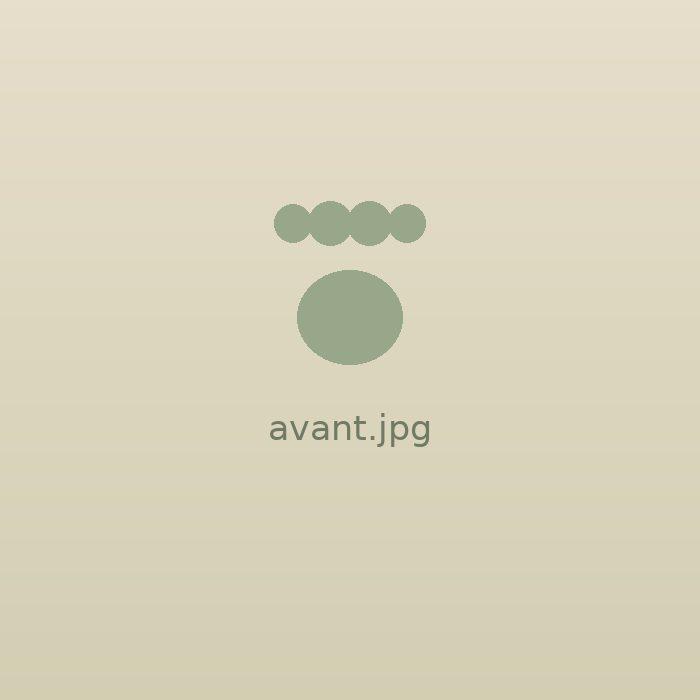
« J'aimerais le laisser découvrir l'extérieur… mais j'ai peur qu'il s'échappe. »
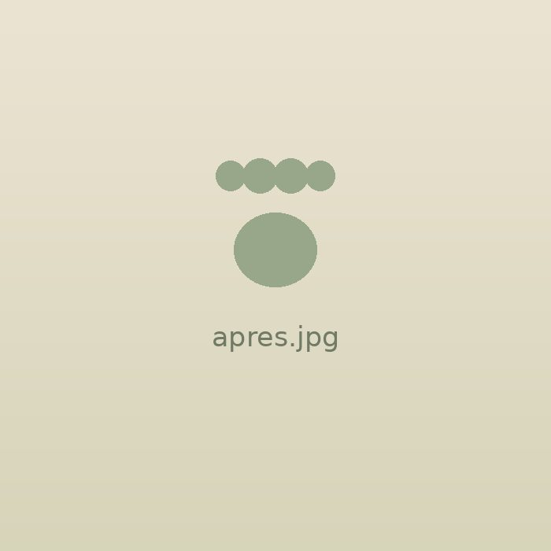
« Il explore. Je reste à proximité. Et nous profitons ensemble de la sortie. »
Preuve sociale
À remplacer par de vrais avis — les trois blocs ci-dessous indiquent le format attendu : résultat concret, confort et facilité d'utilisation, expérience de sortie.
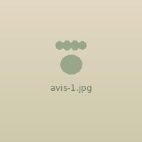
Avis client à insérer — un résultat concret et spécifique.
Prénom I.
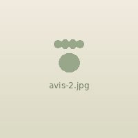
Avis client à insérer — le confort et la facilité d'utilisation.
Prénom I.
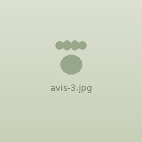
Avis client à insérer — une expérience de sortie.
Prénom I.
Pour quels chats ?
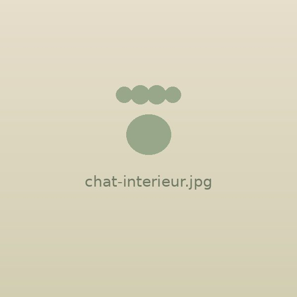
Pour découvrir progressivement le monde extérieur.
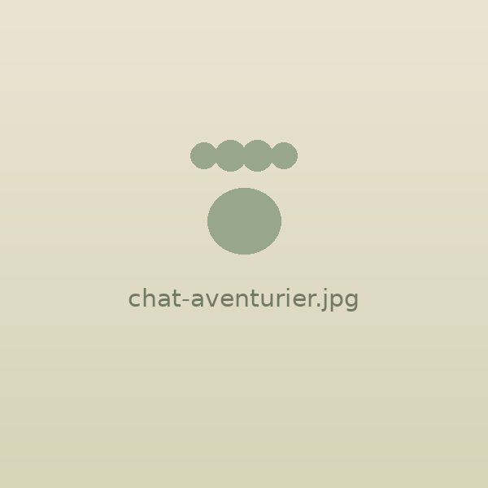
Pour les promenades dans le jardin, le parc ou la nature.
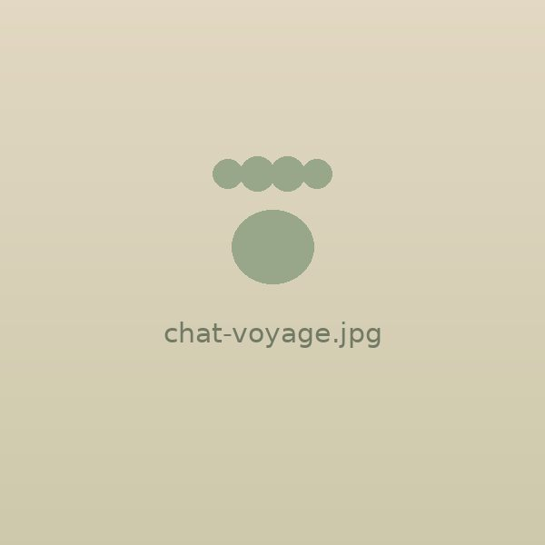
Pour garder votre chat sous contrôle pendant les déplacements.
Pour commencer progressivement l'apprentissage de la promenade.
Comment l'utiliser
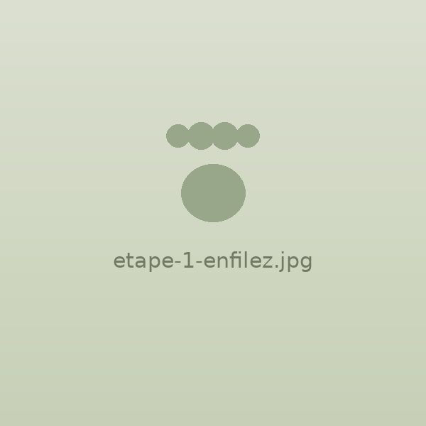
Placez le harnais autour du poitrail de votre chat.
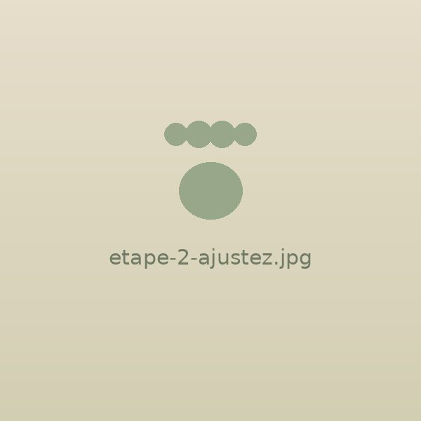
Ajustez les sangles pour obtenir un maintien confortable et stable.
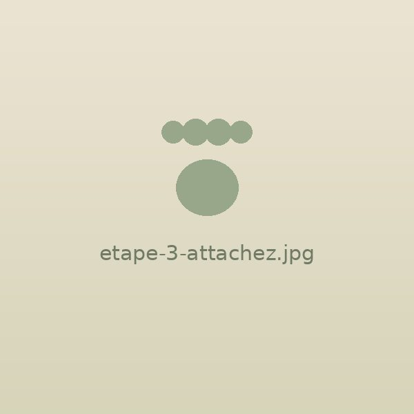
Fixez la laisse et laissez votre chat découvrir progressivement son nouvel équipement.
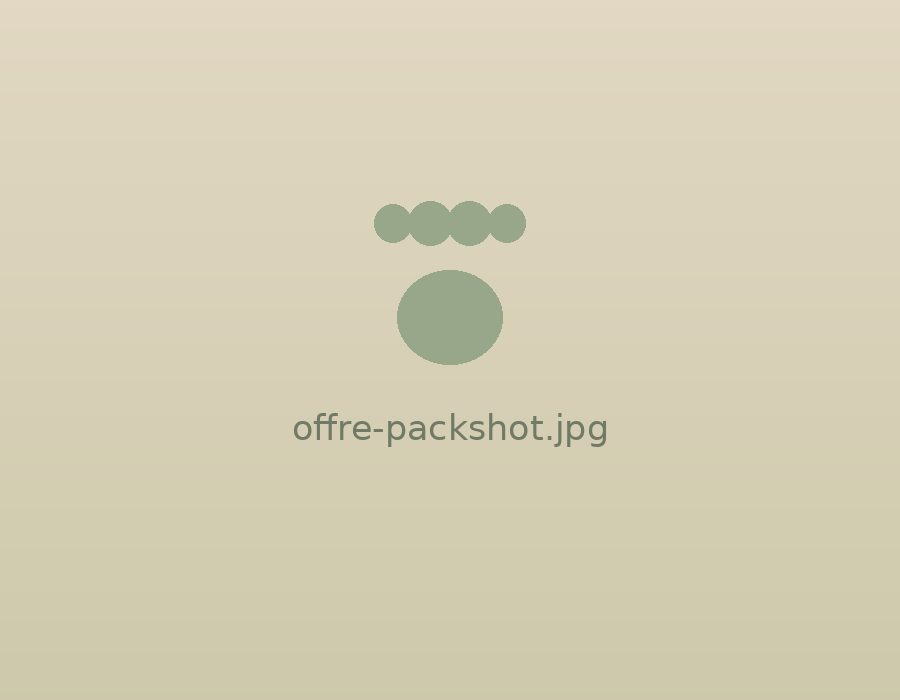
FELYZO — Harnais pour chat
Réassurance
À compléter avant publication — n'affichez un délai, une durée de retour ou une garantie qu'une fois ces conditions réellement définies et tenables.
Délai d'expédition et de livraison : à préciser.
Transaction chiffrée via notre prestataire de paiement.
Conditions et durée : à préciser.
Une question ? Écrivez-nous, nous répondons.
FAQ
Aucun harnais ne peut garantir qu'un chat ne pourra jamais se dégager. FELYZO est conçu pour offrir un maintien stable, notamment lorsque le chat tente de reculer. Un ajustement correct est essentiel.
Utilisez le tour de poitrail indiqué dans le guide des tailles et mesurez votre chat avant de commander.
FELYZO est conçu pour répartir la tension autour du poitrail et accompagner les mouvements naturels du chat.
Commencez à l'intérieur pendant quelques minutes, puis augmentez progressivement la durée avant les premières sorties.
Oui, avec une laisse adaptée et correctement attachée au point prévu à cet effet.
Suivre les instructions d'entretien correspondant aux matériaux et à la version réellement vendue.
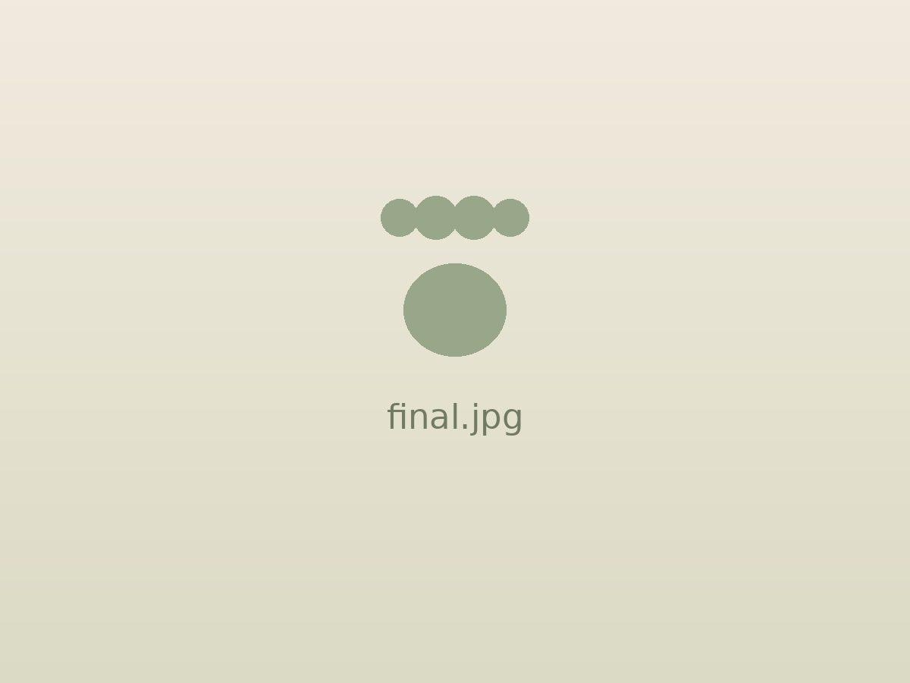
Plus de liberté pour votre chat. Plus de sérénité pour vous.
Découvrir FELYZO →